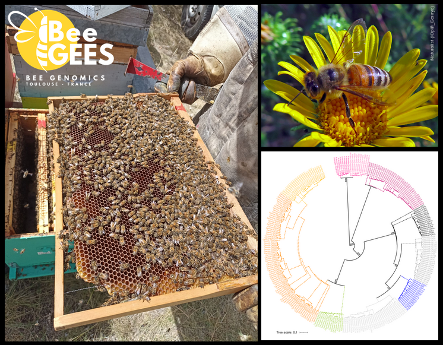
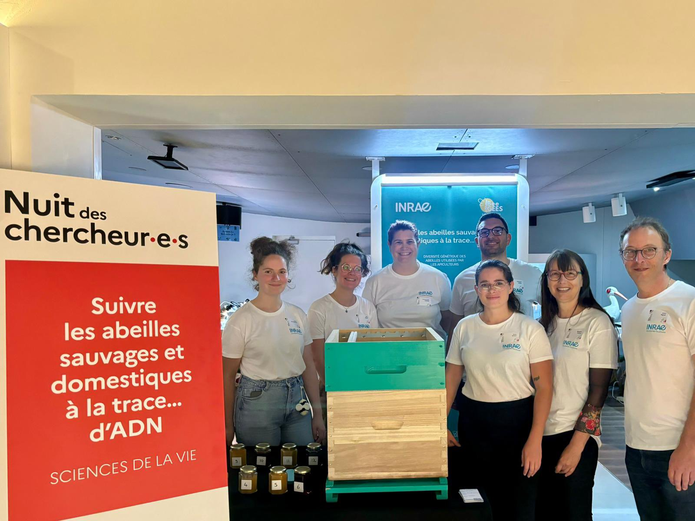

Thibault Leroy
Evolutionary biologist
In this preprint, we retraced the history of rose breeding during the 19th century, the golden age for roses in Europe! We indeed collected large phenotypic and genetic data from 200+ roses from an ancient collection and explored changes. Roses represent an ideal model to reconstruct the past history of breeding because they are reproduced through vegetative culture, allowing the maintenance of ancient varieties. This allows the genotyping and phenotyping of roses that were bred at different periods of time. We studied ~30 traits, including some presumably crucial for rose breeding: the duration of the blooming season, the color and number of petals and the floral scent (with volatile compounds quantified using a GC-mass spectrometry strategy). We have particularly studied wthe population structure, kinship and footprints of artificial selection, identifying genomic regions targeted by breeders. Finally, we performed a large GWA study considering both the genotypes and the phenotypes of the 200+ roses, generating the largest GWAS catalog for roses to date (roseGWASbrowser). Our main take home message is associated with the crucial importance of preserving botanical and ancient rose collections to safeguard diversity and ensure a sustainable breeding for the long-term. This requires an increasing effort, especially regarding state funding.
More details: Leroy et al. Dark side of the honeymoon: reconstructing the Asian x European rose breeding history through the lens of genomics BioRxiv version 5 was peer-reviewed and recommended by PCI Evol Biol

In my latest research, I analyzed whole-genome sequences from four honey bee species to uncover how their evolutionary history has shaped present-day genetic diversity. Honey bees, especially the Western honey bee (Apis mellifera), are essential pollinators, vital for biodiversity and food production. Through ABC, I reconstructed the demographic history of A. mellifera in Europe, revealing postglacial secondary contacts that likely occurred long before modern beekeeping. However, by analyzing patterns of genetic diversity, I also found that marked genetic bottlenecks could be associated with modern beekeeping. Bottlenecks are particularly important in black honey bee populations from island conservatories, leading to a worrying loss of diversity. Finally, I found that the genomic patterns of diversity and recombination have remained highly conserved across species, even after 15 million years of divergence. This study offers a comprehensive analysis of honey bee diversity to date and highlights the need for improved conservation strategies for black honey bees.
More details: Leroy et al. Inferring long-term and short-term determinants of genetic diversity in honey bees: Beekeeping impact and conservation strategies MBE 2024

On October 4th, our BeeGEES team from the GenPhySE research unit participated in the 2024 Researchers' Night at the Cité de l'Espace in Toulouse, France, alongside other colleagues from INRAE. Our activities showcased the remarkable morphological diversity of wild and honey bees, and allowed visitors to discover their genetics - particularly focusing on the CSD sex-determination locus in Western honeybees - and to try to perform at our quiz on pollination and beekeeping. Additionally, visitors had the opportunity to taste an extensive selection of honeys, including several particularly rare ones. It was also a good way to welcome Julie Birgel (2nd on the left), who just started her PhD in our team.
On the picture (from left to right): Anaïs Marquisseau (Dynafor), Julie Birgel (BeeGEES), Emmannuelle Labarthe (BeeGEES), Thibault Leroy (BeeGEES), Elisa Simon (BeeGEES), Magalie Pichon (Dynafor) & Alain Vignal (BeeGEES). Not on the photo: Sonia Eynard (Genesis team, GenPhySE).
In the study published in PNAS, we explored the origin of new heritable mutations in plants, a question that was less explored compared to animals. While most animals have an early segregation of the germline, plant germline is generally assume to segregate very late in development, with a segregation typically assumed to occur near flowering in angiosperms. Such a late segregation is expected to allow the transmission of accumulated somatic mutations to progeny. In this study, we resequenced DNA from branches differentially exposed to sunlight in two tropical tree species, Dicorynia guianensis and Sextonia rubra. Contrary to expectations, we neither found more mutations in more exposed branches, nor any UV-specific footprint (mutation spectra). In addition, reconstructed phylogenies based on the somatic mutations do not follow branching patterns. Our study however unrevealed a large number of mutations, most of them observed at very low frequency in tissues. Despite their low allele frequency, we found that they can be transmitted to the next generation. Overall, our study challenges some common assumptions about somatic mutations in plants, revealing that low-frequency mutations can be heritable, mutation phylogenies deviate from tree branching patterns, and mutation rates do not seem to be highly influenced by UV exposure. These findings provide new perspectives on heritable somatic mutations, emphasizing their crucial role in plant evolution and suggesting more intricate links between plant growth, aging, UV exposure, and mutation rates than previously thought. In my mini-review published in eLife, I highlight how conserved the mutational processes seem to be in animals and plants.
PNAS: Schmitt et al. Low-frequency somatic mutations are heritable in tropical trees Dicorynia guianensis and Sextonia rubra PNAS 2024
eLife: Leroy. Plants: Re-evaluating the driving force behind mutations eLife 2023
Using a large population-based whole-genome sequencing effort (8 Populus species, >200 individuals in total), we investigated genomic landscapes of nucleotide diversity and divergence. Thanks to this multispecies sampling, we were able to investigate the genomic landscapes as progression through time considering all the species pairs along the Populus divergence gradient. We observed relatively conserved patterns of genomic divergence across the species pairs and found support for predominant signatures of linked selection, independently of the stage across the divergence gradient. Our results are also consistent with additional contribution of gene flow and standing genetic variation in shaping these genomic landscapes. Our study highlights the importance of investigating genomic patterns on multiple species across a divergence gradient to learn more about speciation processes. Remarkable work by Huiying Shang (PhD initially supervised by Christian Lexer, and then by Ovidiu Paun and I). The paper is dedicated to the memory of Christian.
More details: Shang et al. Drivers of genomic landscapes of differentiation across a Populus divergence gradient Molecular Ecology 2023
I am a population geneticist, employed as permanent researcher (CRCN) at INRAE, Toulouse, France. My research is focused on the study of evolutionary forces: gene flow, drift, mutation and selection and their relative importance in divergence and speciation. My main model is honey bees but I continue to work on some other models through collaborations, including some models I studied over the last decade (plants: oaks, cereals, Populus, Bromeliads etc; animals: passerine birds, salmon etc). My interests also include genomics - in its broader sense - and statistical methods for population genetics.